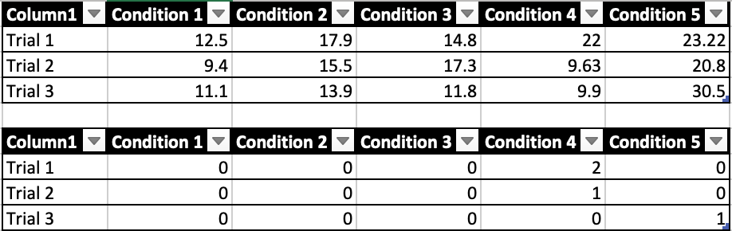
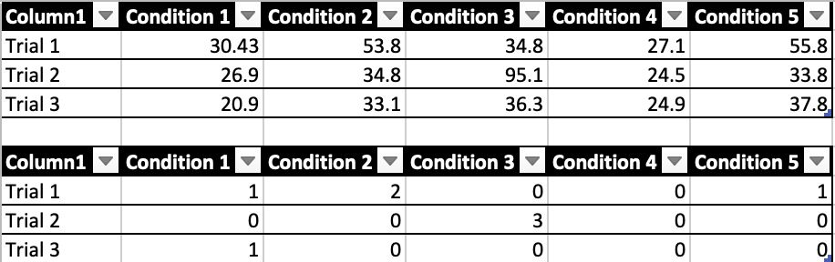
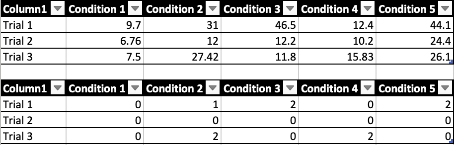
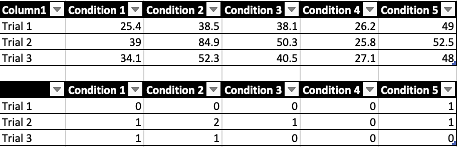

I will compare a 3-key interface and a 1-key scanning interface. In order to do so, we’ll test the following equations:
7 + 3 = (10)
+ 19 = (29)
– 1 = (28)
– / 7 = (4)
– C 80 / 2 = (40)
I picked these because they provide a range of keys all over the keyboard that require a good bit of navigation.
I’ll record the number of errors that occur, and the amount of time each test takes.
3-key instructions
a => next selection
s => previous selection
b => click
1-key instructions
Press p to start scanning, press p to select
Results
I tested with two participants. Each participant tested 1 Key and 3 Key with their dominant hand. They completed each of the conditions 3 times each.
Both of these took longer than I expected. The 3 key one was difficult because It only went forwards and backwards
but not up and down. However it had fewer mistakes than the 1 key one. The 1 key was more difficult attention-wise. Participants seemed easily distracted
while waiting for the selection to come around. That attentional element may have been the reason for increase in errors. It also took longer because of
the mandatory half second wait.
Below are charts for each participant's tests:
About this app
Protocol:
I will compare a 3-key interface and a 1-key scanning interface. In order to do so, we’ll test the following equations:
I picked these because they provide a range of keys all over the keyboard that require a good bit of navigation. I’ll record the number of errors that occur, and the amount of time each test takes.
3-key instructions
1-key instructions
Press p to start scanning, press p to select
Results
I tested with two participants. Each participant tested 1 Key and 3 Key with their dominant hand. They completed each of the conditions 3 times each. Both of these took longer than I expected. The 3 key one was difficult because It only went forwards and backwards but not up and down. However it had fewer mistakes than the 1 key one. The 1 key was more difficult attention-wise. Participants seemed easily distracted while waiting for the selection to come around. That attentional element may have been the reason for increase in errors. It also took longer because of the mandatory half second wait. Below are charts for each participant's tests:Participant 1 3k
Participant 1 1k
Participant 2 3k
Participant 2 1k
